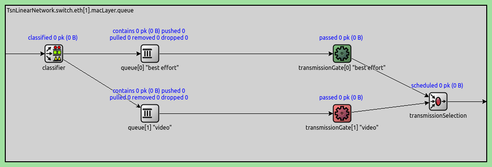
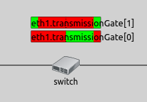
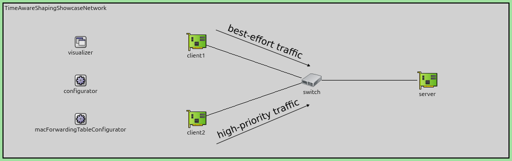
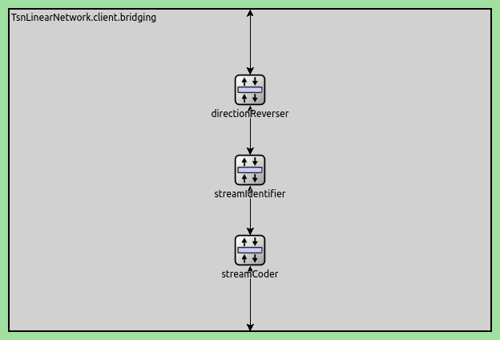
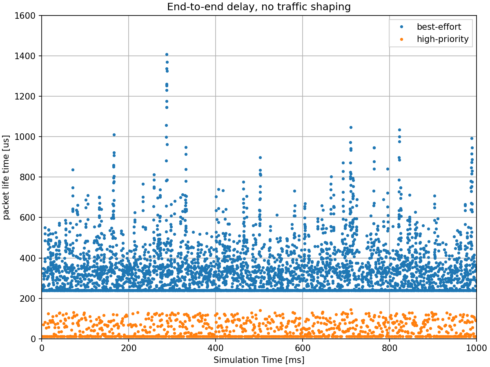
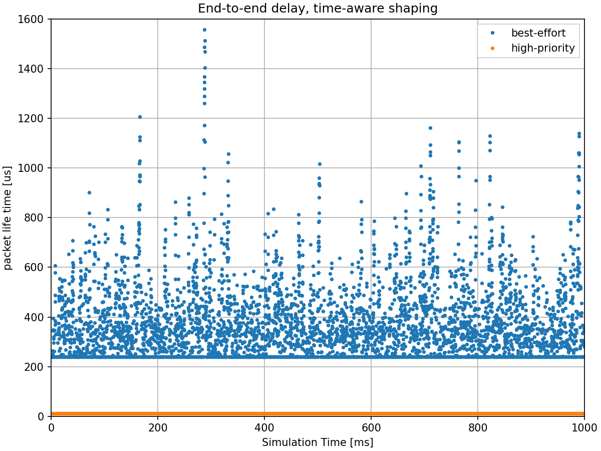
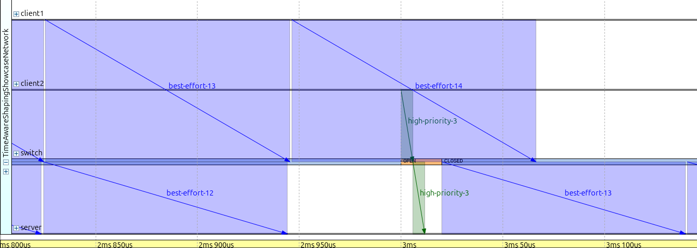
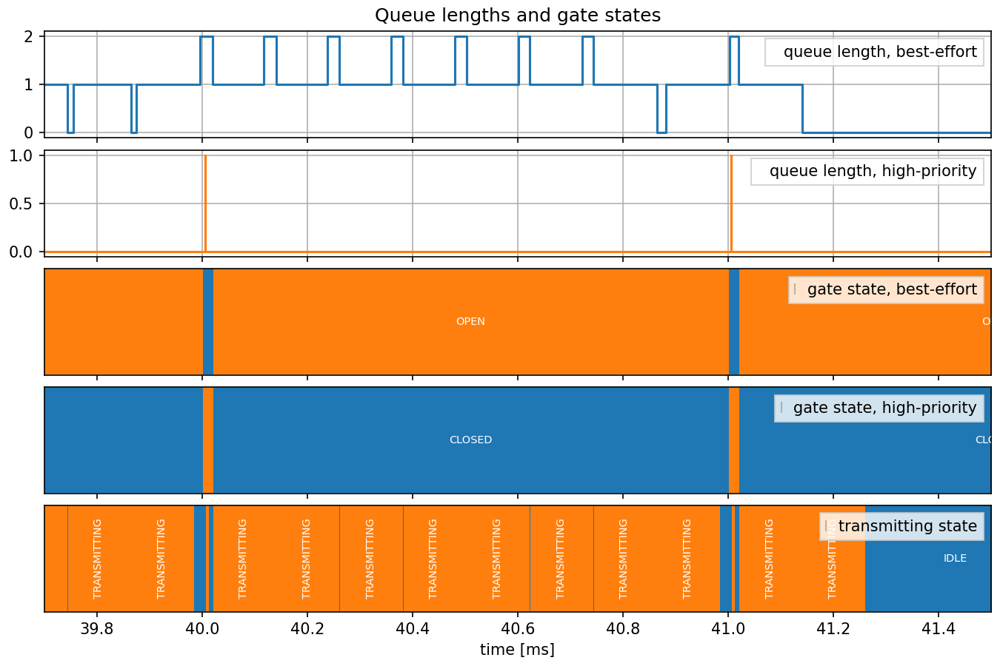

Time-Aware Shaping¶
Goals¶
Time-aware shaping is a feature specified in the IEEE 802.1Qbv standard that allows for the scheduling of the transmission of time-critical and lower priority frames in time-triggered windows. This helps to guarantee bounded latency for time-critical frames, which is important for applications that require low and predictable latency in Time-Sensitive Networking (TSN). Time-aware shaping works by dividing time into fixed intervals, or windows, and scheduling the transmission of frames within these windows based on their priority. Higher priority frames are given priority by transmitting them in a separate window, while lower priority frames are transmitted in the remaining time.
In this showcase, we will demonstrate how to use time-aware traffic shaping to improve the performance of time-critical applications in an Ethernet network. By the end of this showcase, you will understand how time-aware shaping works and how it can be used to guarantee bounded latency for time-critical frames.
4.6The Model¶
Overview¶
Time-aware shaping (TAS), and its implementation, the Time-aware shaper, utilizes the Time-division multiple access (TDMA) scheme to send different priority traffic streams in their own allotted transmission time windows. This makes the delay bounded, as lower-priority frames cannot hold up higher priority ones.
The time-aware shaper transmits different traffic streams by opening and closing gates belonging to different queues, according to a time schedule. To guarantee low delay, this schedule needs to be coordinated among network bridges. This also means that time-aware shaping requires synchronized clocks throughout the network.
Note
Gate scheduling can be a complex problem, especially in a larger network. In INET, various gate scheduling configurators can automate this task, see the TSN Automatic Gate Schedule Configuration showcases. In this example simulation, we use a simple schedule that we can configure by hand.
In INET, the Time-aware shaping is implemented by the Ieee8021qTimeAwareShaper module. This is a queue module that can be configured to replace the default simple queue
in the MAC submodule of modular Ethernet interfaces (such as LayeredEthernetInterface). The shaper has multiple sub-queues and corresponding gate submodules, one for each
traffic priority class. This number can be configured with the numTrafficClasses parameter of the shaper. By default, it has eight traffic classes, as per the IEEE 802.1Q
standard.
Here is an Ieee8021qTimeAwareShaper module with two traffic classes (instead of the default eight), as used in the example simulation:

Some notes on the traffic flow in the shaper:
Frames are classified according to some mechanism (PCP by default) by the classifier and are sent to one of the queues
The gates open and close according to the configured schedule
When a packet is pulled from the Time-aware shaper, the priority scheduler at the end pulls the frame from the first available queue through the open gate.
The gates indicate their state with color (green for open, red for closed)
The gates are PeriodicGate modules. Gate scheduling is configured by setting the following parameters of the gates:
durations: A list of intervals when the gate is in one state (empty by default)initiallyOpen: Sets whether the gate is open in the first specified interval (trueby default)offset: Offsets the intervals specified by thedurationsparameter (0s by default)
The complete period of the gate is the sum of the intervals specified with the durations parameter.
Time-aware shaping functionality can be added to a TsnSwitch by setting the hasEgressTrafficShaping parameter to true. This setting replaces the default queue with
an Ieee8021qTimeAwareShaper in all Ethernet interfaces in the switch.
Note
Setting this parameter only adds the option of Time-aware shaping to the switch. To use it, gate schedules need to be configured. This is because, by default, the gates are always open; thus, without any configuration, the shaper works as a priority queue, where frames are prioritized by PCP.
Visualizing Gate Schedules¶
The configured gate schedules can be visualized with the GateScheduleVisualizer module. It displays a gate schedule in time, as a colored bar near the network node containing the gate, on the top-level canvas (by default, to the right). The horizontal axis of the bar is time, and the current time is indicated by a dashed vertical line in the center. The gate schedule is displayed as color-coded blocks on the bar. Green blocks signify the open, and red blocks the closed gate state. The blocks move to the right with simulation time, so that the current time is in the center, the past is to the left, and the future is to the right. Thus, the visualization shows if the gate is currently open or closed, and when it will change state in the future.
The visualization can be enabled by setting the visualizer’s displayGateSchedules parameter to true. By default, it displays all gates in the network, but this can be narrowed down with the
gateFilter parameter.
For example, two gates in the same interface are visualized on the image below:

This visualization can be useful for an overview of gate schedules in the network, troubleshooting configurations and understanding what is happening in the network regarding gate schedules.
Relationship to Other Traffic Shapers¶
The Ieee8021qTimeAwareShaper makes it possible to add the time-aware shaping feature to other traffic shapers, such as the Credit-based shaper and the Asynchronous shaper. For more information, check out the Credit-Based Shaping and the Asynchronous Traffic Shaping showcases.
The Configuration¶
The network consists of four nodes: two clients, a switch, and a server. The clients and server are TsnDevice modules, and the switch is a TsnSwitch module. The links between them use 100 Mbps EthernetLink channels:

We configure the two clients to generate two different traffic categories and enable time-aware traffic shaping in the switch.
In this simulation, we want to focus on demonstrating the delay benefits of time-aware shaping for latency-critical traffic. The simulation uses two different traffic categories to show how time-aware shaping can provide bounded delay for high-priority frames while still allowing best-effort traffic to use the remaining bandwidth.
The two clients generate traffic representing distinct application requirements:
Client1 (best-effort traffic category): Generates large packets (1500B) with exponential intervals, averaging ~60 Mbps. This represents bulk data transfer applications that prioritize throughput over latency.
Client2 (high-priority traffic category): Generates small packets (64B) with constant data rate (CDR) at 1ms intervals, averaging ~512 kbps. This represents latency-sensitive applications (e.g., control traffic, real-time commands) that require bounded delay.
*.client*.numApps = 1
*.client*.app[*].typename = "UdpSourceApp"
*.client1.app[0].display-name = "best-effort"
*.client2.app[0].display-name = "high-priority"
*.client*.app[*].io.destAddress = "server"
*.client1.app[0].io.destPort = 1000
*.client2.app[0].io.destPort = 1001
*.client1.app[0].io.displayStringTextFormat = "{numSent} best-effort"
*.client2.app[0].io.displayStringTextFormat = "{numSent} high-priority"
*.client1.app[0].source.packetLength = 1500B - 58B # 58B = 8B (UDP) + 20B (IP) + 4B (Q-TAG) + 14B (ETH MAC) + 4B (ETH FCS) + 8B (ETH PHY)
*.client2.app[0].source.packetLength = 72B - 58B # 58B = 8B (UDP) + 20B (IP) + 4B (Q-TAG) + 14B (ETH MAC) + 4B (ETH FCS) + 8B (ETH PHY)
*.client1.app[0].source.productionInterval = exponential(200us) # ~60 Mbps (PHY rate)
*.client2.app[0].source.productionInterval = 1ms # ~576 kbps (PHY rate)
We need to classify packets from the two applications into best-effort and
high-priority traffic classes. This is accomplished in two steps: stream
identification assigns packets to named streams ("best-effort" and
"high-priority") based on destination port, then stream encoding maps
these streams to traffic classes by setting the appropriate PCP numbers.
The stream identification and stream encoding features can be enabled in
TsnDevice by setting its hasOutgoingStreams parameter to true.
We do this in both clients:
*.client*.hasOutgoingStreams = true
This setting adds a StreamIdentifierLayer and a StreamCoderLayer submodule to the bridging layer in the client:

Note
The streamCoder module contains a stream encoder and a stream decoder submodule, so it works in both directions.
The stream identifier matches packets against a filter expression, and attaches request tags to matching packets. The request tag contains the name of the assigned stream. We configure the stream identifier to assign streams based on destination UDP port:
*.client*.bridging.streamIdentifier.identifier.mapping = [{stream: "best-effort", packetFilter: expr(udp.destPort == 1000)},
{stream: "high-priority", packetFilter: expr(udp.destPort == 1001)}]
The stream encoder attaches 802.1q-tag requests to packets. Here, we can configure how to encode the various streams in the 802.1q header, such as with VLAN ID, or PCP number. We assign the best-effort stream to PCP 0, and the high-priority stream to PCP 4:
*.client*.bridging.streamCoder.encoder.mapping = [{stream: "best-effort", pcp: 0},
{stream: "high-priority", pcp: 4}]
The Ieee8021qProtocol module in the link layer adds 802.1q headers to packets and sets the PCP field according to the request tags.
The traffic shaping takes place in the outgoing network interface of the switch where both traffic categories pass through. We enable egress traffic shaping in the switch:
*.switch.hasEgressTrafficShaping = true
This setting replaces the default queue with an Ieee8021qTimeAwareShaper module in the MAC layer of all interfaces in the switch.
Let’s configure the schedules. By default, the Ieee8021qTimeAwareShaper has eight traffic classes, but we only use two. We configure a 1ms cycle where:
High-priority traffic: Gets the first 20us of each cycle - enough time to transmit several small packets with bounded delay
Best-effort traffic: Gets the remaining 980us - enough time to transmit up to 8 large packets
The gates operate in a mutually exclusive manner: when the high-priority gate is open, the best-effort gate is closed, and vice versa. This ensures complete traffic separation and prevents any interference between the two traffic categories.
*.switch.eth[*].macLayer.queue.numTrafficClasses = 2
*.switch.eth[*].macLayer.queue.*[0].display-name = "best-effort"
*.switch.eth[*].macLayer.queue.*[1].display-name = "high-priority"
*.switch.eth[*].macLayer.queue.transmissionGate[0].initiallyOpen = false
*.switch.eth[*].macLayer.queue.transmissionGate[0].durations = [20us, 980us] # 1ms cycle
*.switch.eth[*].macLayer.queue.transmissionGate[1].initiallyOpen = true
*.switch.eth[*].macLayer.queue.transmissionGate[1].durations = [20us, 980us] # 1ms cycle
This configuration creates a “green wave” effect for the high-priority traffic.
Since client2 sends packets at 1ms intervals (with zero start offset), and the gate
cycle is also 1ms, high-priority packets arrive when their
transmission gate is open. The 20us window allocated for high-priority traffic
is more than sufficient, as each high-priority packet takes approximately 5.7us to
transmit (including propagation time). This synchronization between application send times and
gate schedules eliminates queueing delays for high-priority packets, providing
deterministic latency.
Results¶
The primary benefit of time-aware shaping is providing bounded, predictable
delay for high-priority traffic. We demonstrate this by comparing two scenarios:
one without time-aware shaping (NoTrafficShaping) and one with time-aware
shaping enabled (TimeAwareShaping).
Delay Without Traffic Shaping¶
The following chart shows the end-to-end delay for high-priority traffic without time-aware shaping:

Without time-aware shaping, high-priority packets experience significant and unpredictable delays. When a high-priority packet arrives at the switch, it must wait for any best-effort frame that is already being transmitted to complete. Since best-effort packets are large (1500B), they take approximately 120us to transmit at 100 Mbps. This means high-priority packets cannot be transmitted immediately, resulting in variable delays that violate real-time requirements.
Delay With Traffic Shaping¶
The following chart shows the end-to-end delay for high-priority traffic with time-aware shaping enabled:

With time-aware shaping, high-priority packets experience bounded, predictable
delays. The gate schedule ensures that high-priority packets always have access
to their dedicated 20us transmission window every 1ms cycle. Combined with the
green wave effect (where packets arrive when their gate is open), high-priority
packets are transmitted immediately without waiting for an ongoing best-effort
frame transmission to be completed. This provides the optimal deterministic
latency of 11.62us (2*transmission time + 2*propagation time = 5.76*2 + 0.05*2 =
11.62us) regardless of best-effort traffic load.
Additional Details¶
The following sequence chart illustrates how the shaper protects high-priority traffic. The gate state of the high-priority traffic category is displayed at switch:

The packet best-effort-13 arrives when its gate is open, but is not
transmitted because it would not fit in the remaining gate window. When
high-priority-3 arrives, its gate is already open (the high-priority gate is
closed) and the packet is sent immediately. The best-effort-13 frame is only
transmitted in the next open gate window (when the high-priority gate is closed
again). This demonstrates how the shaper ensures high-priority traffic always
has undisturbed access to the output interface in its dedicated transmission
window.
The following chart shows queue lengths, gate states, and transmitting state in the switch:

The chart illustrates several aspects:
Mutually exclusive gate operation: When the high-priority gate is open, the best-effort gate is closed, and vice versa
Packet size differences: In the transmitter state chart, the short high-priority packets and long best-effort packets can be distinguished
Queue behavior: The queue length charts show that high-priority packets experience no queueing delay, while best-effort packets sometimes queue
Sources: omnetpp.ini
Try It Yourself¶
If you already have INET and OMNeT++ installed, start the IDE by typing
omnetpp, import the INET project into the IDE, then navigate to the
inet/showcases/tsn/trafficshaping/timeawareshaper folder in the Project Explorer. There, you can view
and edit the showcase files, run simulations, and analyze results.
Otherwise, there is an easy way to install INET and OMNeT++ using opp_env, and run the simulation interactively.
Ensure that opp_env is installed on your system, then execute:
$ opp_env run inet-4.6 --init -w inet-workspace --install --build-modes=release --chdir \
-c 'cd inet-4.6.*/showcases/tsn/trafficshaping/timeawareshaper && inet'
This command creates an inet-workspace directory, installs the appropriate
versions of INET and OMNeT++ within it, and launches the inet command in the
showcase directory for interactive simulation.
Alternatively, for a more hands-on experience, you can first set up the workspace and then open an interactive shell:
$ opp_env install --init -w inet-workspace --build-modes=release inet-4.6
$ cd inet-workspace
$ opp_env shell
Inside the shell, start the IDE by typing omnetpp, import the INET project,
then start exploring.
Discussion¶
Use this page in the GitHub issue tracker for commenting on this showcase.